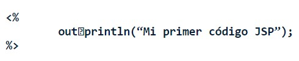
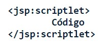
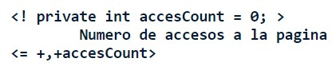

Aplicaciones Web
Java Server Pages (JSP) es una tecnología que nos permite mezclar HTML estático con HTML generado dinámicamente. Muchas páginas Web que están construidas con programas CGI son casi estáticas, con la parte dinámica limitada a muy pocas localizaciones. Pero muchas variaciones CGI, incluyendo los servlets, hacen que generemos la página completa mediante nuestro programa, incluso aunque la mayoría de ella sea siempre lo mismo. JSP nos permite crear dos partes de forma separada.
Los Scripts JSP permiten insertar codigo java en el servlet resultante de la compilacion de la pagina JSP, hay tres formas:
Se usan para mandar valores directamente a la pagina web resultante de la JSP, <%= expresion %>, la expresion es ejecutada, se convierte a una cadena de caracteres (String) y insertada en la pagina. En las expresiones podemos usar gran cantidad de variables predefinidas, los mas usados son:
Si queremos hacer algo más complejo que insertar una simple expresión, los scriptlets JSP nos permiten insertar código arbitrario dentro del método servlet que será construido al generar la página. Los Scriptlets tienen la siguiente forma:
Si queremos usar los caracteres "%>" dentro de un scriptlet, debemos poner "%\>". Finalmente, observa que el equivalente XML de <% Código %> es :
as declaraciones JSP nos permiten configurar variables para su uso posterior en expresiones o scriptlets. También podemos declarar variables dentro de expresiones o scriptlets en el momento de usarlas. El ámbito es toda la página JSP, no hay concepto de variables de ejemplar. Es decir, no tenemos que declarar variables de ejemplar para usar en más de una expresión o scriptlet. Las declaraciones van encerradas entre etiquetas de declaración <%! Codigo Java %>. Como las declaraciones no generan ninguna salida, normalmente se usan en conjuncion con expresiones JSP o scriptlets, ejemplo:
Este codigo imprime el numero de veces que se ha solicitado la pagina actual desde que el servidor se arranco (o la clase del servlet se modifico o recargo)
G. Guerrero Ulloa, Tecnologías para el desarrollo de aplicaciones web, Quevedo, 2021.